Dev Mode
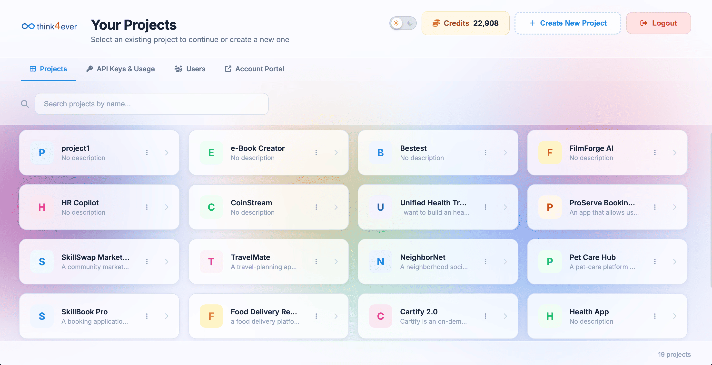
Dev Mode (</> Dev Mode) is a quick-toggle control located in the top-right header bar that switches the workspace view into a developer-focused environment.
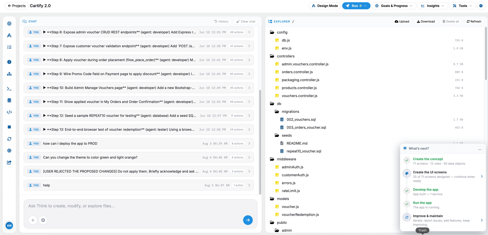
- Developer View Toggle: Switches the canvas and interface from visual design mode to code-centric views, revealing underlying source code, technical specifications, and API payload schemas.
- Code & Schema Inspection: Provides technical teams with direct access to generated code snippets, component properties, and backend configuration structures required for implementation.
- Location: Situated in the primary header between Open App and the user profile dropdown.
When Dev Mode (</> Dev Mode) is enabled, the workspace shifts into an advanced developer console designed for direct code inspection, prompt-based adjustments, and technical asset management.
Core Workspace Layout
Prompt & Interactive Chat Panel (Left Bar)
An active sidebar for issuing direct natural-language prompts to modify system requirements, trigger code rebuilds, or request architectural adjustments in real time.
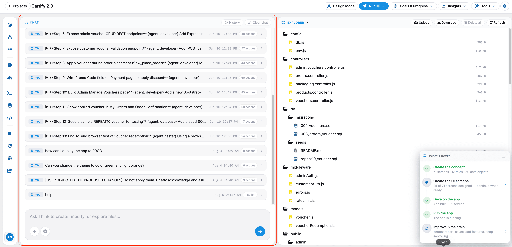
File Explorer & Component Tree
A tree-view navigation panel that displays all project-generated assets, source files, and database schemas for quick selection and focus.
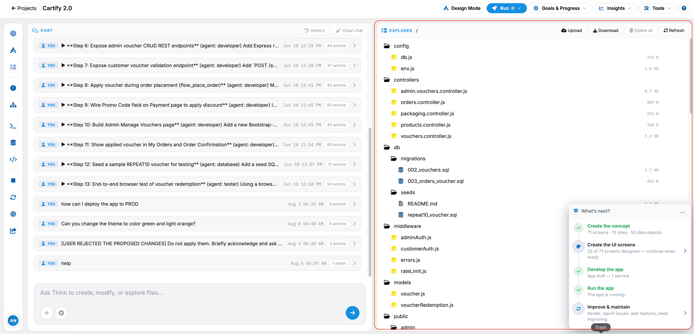
Central Code & Schema Viewer
Replaces standard visual canvases with syntax-highlighted code blocks, raw JSON/YAML payloads, and technical specification views.
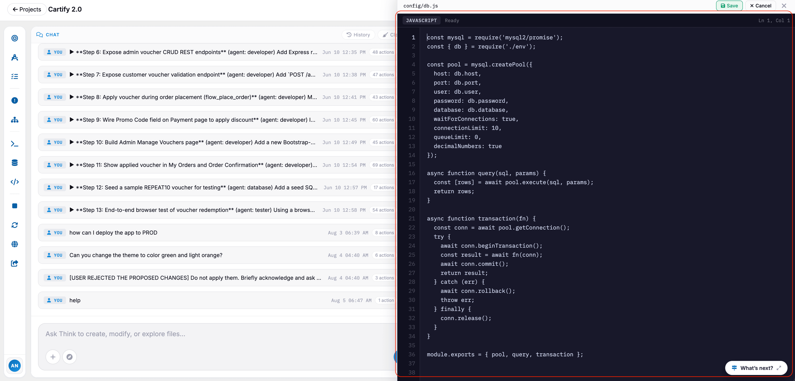
Dev Mode Toolbar & Control Options
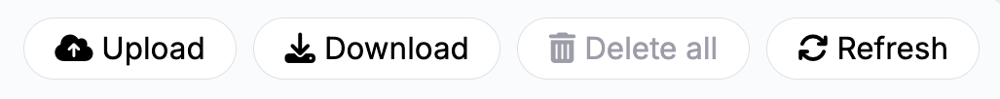
- Code Export & Sync buttons: Buttons to quickly copy, download, or sync generated code blocks and technical specifications directly to connected repositories (e.g., GitHub, GitLab).
- Sidebar Tools: Actions to validate schema constraints, re-run agent architectural checks, or trigger a complete system rebuild based on modified prompt parameters.
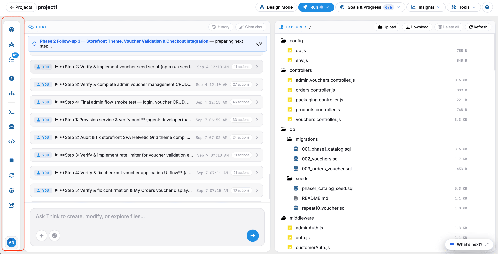
What’s next?
The What's next? panel tracks the end-to-end lifecycle of your application development process. Below is the user manual description for each phase:
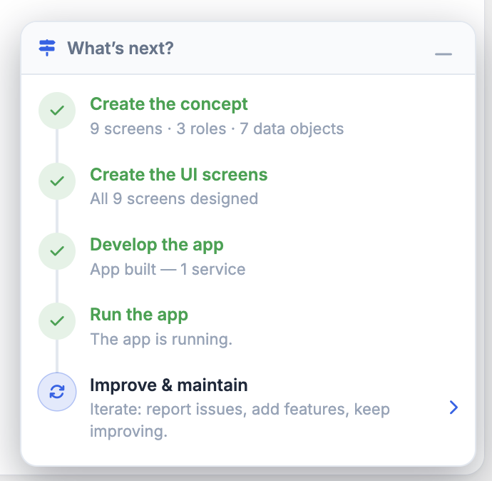
1. Create the Concept:
Phase 1: Planning & System Design.
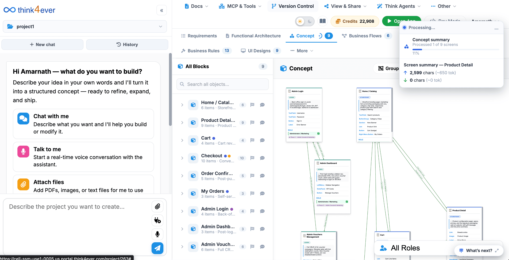
This phase establishes the foundational blueprint and architecture of the software project before any design or code is written.
- Requirements Gathering: Map out every intended workflow to determine the exact number of screens required to deliver a complete user experience.
- Role-Based Access Control (RBAC): Define the permissions, data access levels, and functional boundaries for each distinct user role in the system.
- Data Modeling: Structure the backend entity schemas, establishing key relationships, field types, and validation rules across all data objects.
- Verification: Validate that the conceptual architecture accounts for all functional requirements, security boundaries, and data dependencies before moving to interface design.
2. Create the UI Screens:
Phase 2: User Interface & Experience Design.
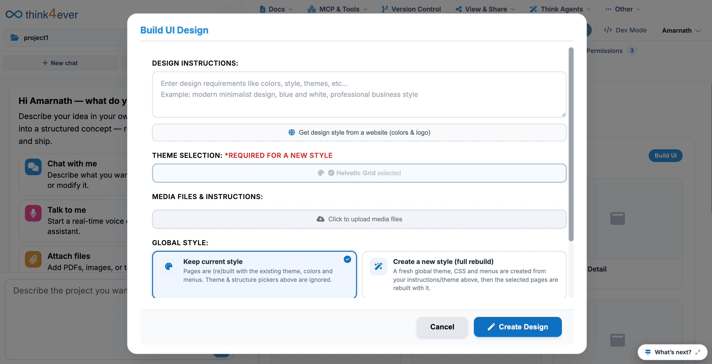
This phase translates conceptual workflows into visual, interactive layouts and component interfaces.
- Wireframing & Visual Design: Design responsive layouts, navigation menus, input forms, and data display components for every screen in the system.
- State Design: Create visual states for each component, including default, active, loading, disabled, and error handling states.
- Design System Alignment: Ensure consistent application of typography, spacing, color themes, and interactive patterns across all user touchpoints.
- Verification: Review each finished screen against the concept specifications to confirm that all required data objects and role permissions are properly represented visually.
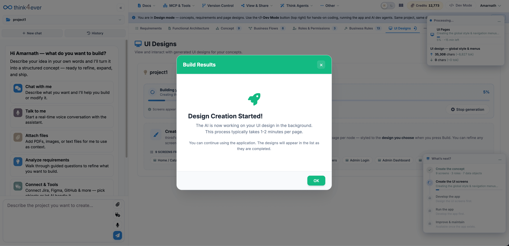
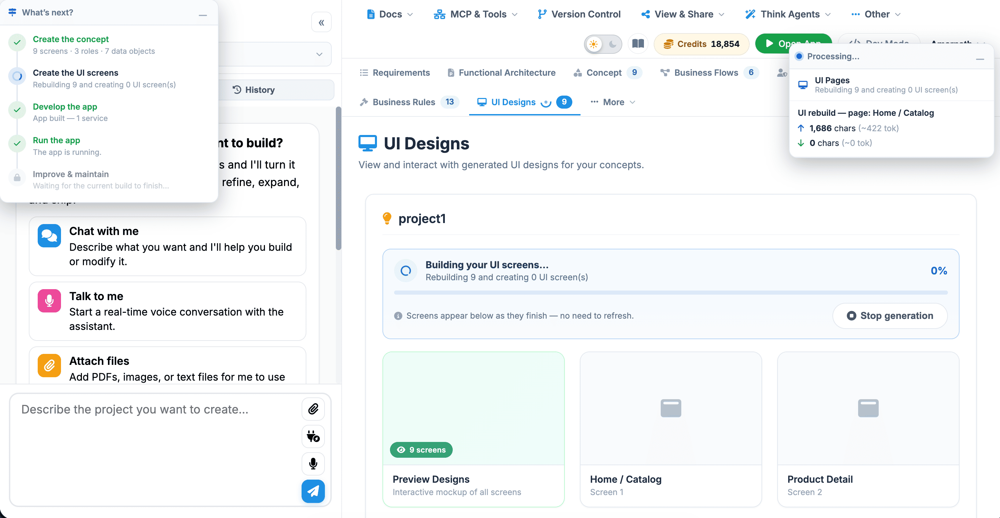
3. Develop the App:
Phase 3: Backend & Integration Engineering.
This phase transforms high-level designs and structural models into functional, executable software.
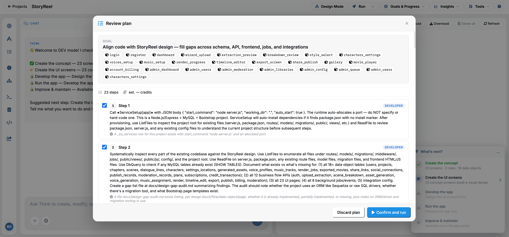
- Service Architecture: Construct the core microservices or monolith backends responsible for processing business logic, handling API endpoints, and orchestrating server events.
- Database Provisioning: Deploy database instances and execute migration scripts to instantiate the tables, indexes, and relationships defined in the concept stage.
- Integration & Security: Connect front-end interfaces to API services, implement token-based authentication, and configure data encryption protocols.
- Verification: Execute unit and integration test suites to confirm that services return correct responses, process transactions cleanly, and fail gracefully under error conditions.
4. Run the App:
Phase 4: Deployment & Infrastructure Hosting.
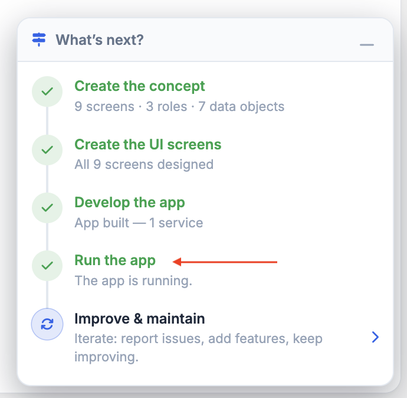
This phase builds, packages, and deploys the application into a live runtime host environment.
- Build & Compilation: Compile source code, bundle static assets, and run containerization procedures to produce production-ready build packages.
- Infrastructure Configuration: Set up hosting servers, load balancers, domain routings, SSL/TLS security certificates, and environment variables.
- Execution & Health Monitoring: Launch application runtime instances and initiate automated health-check probes to track memory, CPU utilization, and uptime.
- Verification: Access the live application URL to verify HTTP 200 responses, socket connectivity, and real-time database communication.
5. Improve & Maintain:
Phase 5: Post-Launch Operations & Iteration.
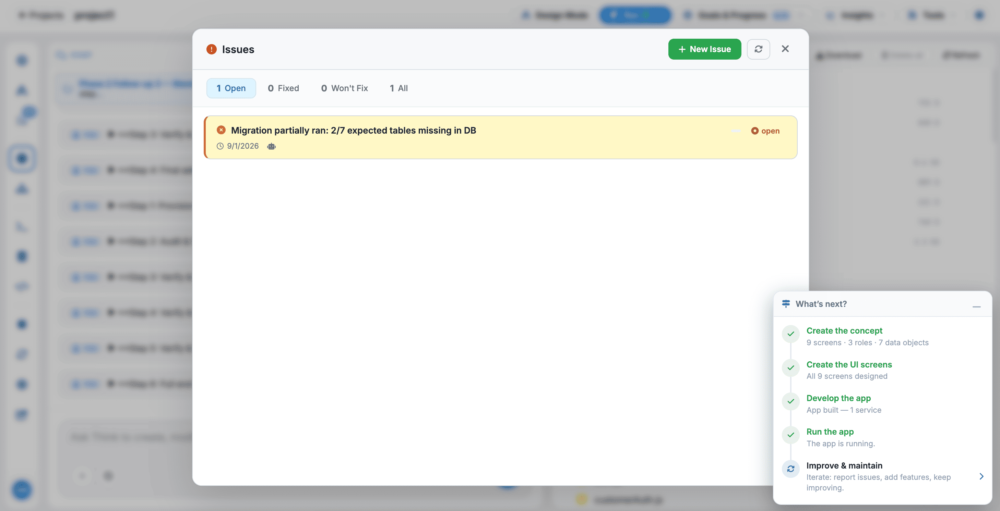
This phase handles the ongoing operation, continuous integration, and long-term enhancement of the application.
- Incident Management: Collect user feedback, aggregate crash reports, and trace runtime errors to isolate root causes and issue hotfixes.
- Feature Iteration: Plan, scope, and implement new feature requests or performance optimizations based on analytics and shifting user demands.
- System Maintenance: Apply dependency security updates, optimize database queries, scale infrastructure capacity, and maintain compatibility across platform updates.
- Verification: Confirm bug resolution via regression testing and verify that deployment pipelines push updates without disrupting active user sessions.